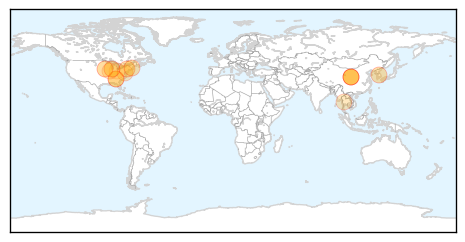

Unknown
30-Day Web Trend
0 alerts, 0 warnings

30-Day Twitter Trend
1 alerts, 0 warnings

Article Locations

Article Confidences
Top Articles:
- 0.966
- Angell Animal Medical Center Warns of Canine Flu Coming to...
- 0.957
- 94 test positive for TB at South Devon school
- 0.953
- Multistate #outbreak of #Salmonella Paratyphi B
- 0.934
- New canine flu virus spreads to Massachusetts
- 0.927
- Health minister calls for preventive measures to fight MERS
- 0.917
- Chicago Tribune
- 0.917
- Chicago Tribune
- 0.917
- Chicago Tribune
- 0.906
- 94 pupils at Teign school test positive for tuberculosis
- 0.894
- Salmonella outbreak
- 0.883
- Pools of threat: brain-eating ameoba in Karachi
- 0.866
- Shi'ite militias deploy to take on Islamic State insurgents near Iraq's Ramadi
- 0.851
- U.S. salmonella outbreak might have triggered by raw tuna
- 0.838
- Outbreak of Tuna Sushi Salmonella Paratyphi Infections in 9 States Sickens 53
- 0.833
- Nepal: WHO marks one month since devastating earthquake as it ramps up aid
- 0.726
- Board's quick action against Legionella praised
- 0.721
- All efforts to prevent monsoon-related diseases
- 0.709
- Plague found in ground squirrel near Boise
- 0.709
- Tips to beat ticks
- 0.692
- Health minister drums up support for Syria’s sanction-battered health sector
- 0.668
- 31 Cases of Salmonella in California Due to Sushi
- 0.644
- SDA offers free health care
- 0.643
- Dumuria health complex staff face negligence accusation
- 0.583
- Preventing malaria in South Sudan, one net at a time - South Sudan
- 0.573
- Nursing being compromised in Bengal government hospitals
- 0.568
- The Caledonian-Record
- 0.558
- To Avoid Lyme Disease, Follow These Six Tips (ICYMI)
- 0.545
- UN accuses S. Sudan fighters of shelling base
- 0.545
- Shiite militia launches counter-offensive on IS group near Iraq's Ramadi
- 0.545
- French jihadists ‘behind IS group suicide bombings in Iraq’
- 0.545
- Burundi opposition figure shot dead
- 0.545
- Romero beatification can ‘help El Salvador grow closer’
- 0.532
- South Sudan: Preventing malaria in South Sudan, one net at a time
- 0.521
- Region, The Freeman Sections, The Freeman
- 0.507
- The Threat To Medical Breakthrough – Daily Guide Ghana
Top Tweets:
- 0.646
- RT: Las tres formas de viajar en el tiempo (y las pelis en las que aparecen), en la revista de junio. http:…
- 0.556
- RT: En la novena edición de la revista 'Dabiq' aparece un artículo titulado '¿Esclavas o prostitutas?', escrito por... http://t…
Influenza
30-Day Web Trend
0 alerts, 0 warnings

30-Day Twitter Trend
3 alerts, 0 warnings

Article Locations
Article Confidences

Top Articles:
- 0.994
- Dog flu spreading: Deadly canine flu now in 12 states, how to protect your dog
- 0.994
- Dog flu spreading: 1,000 dogs sick, 12 states affected, 8 dogs dead
- 0.986
- Vaccines developed for H5N1, H7N9 avian influenza strains
- 0.946
- Vaccines against bird flu
- 0.946
- Soon, vaccines for 2 bird flu strains
- 0.943
- First case of dog flu shows up in Massachusetts
- 0.939
- Soon, vaccines for 2 bird flu strains , AniNews.in
- 0.885
- ICYMI: Deadly Dog Flu Strain Confirmed in Georgia
- 0.782
- Strain of #Canine #Influenza virus detected in #Atlanta is #H3N2
- 0.751
- May 22, 2015 Archives
- 0.751
- May 22, 2015 Archives
- 0.711
- Bird flu backlog should ease soon, Vilsack says
- 0.639
- CDC Releases Maps Most Distinct Causes of Death in U.S.
- 0.536
- #Canine #influenza diagnosed – results under review
- 0.516
- Bird flu backlog should be cleared in a week
Top Tweets:
-
No tweets found for May 23, 2015